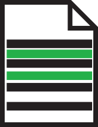
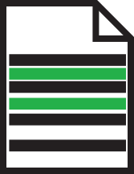

Tagging
You are able to create tags for software releases, this is known as a concept. You will add a tag to a specific commit that has been made, which would be used as a software relese. Add a tag by running
git tag 1.0.0 74865s12sf
This will add a tag called 1.0.0 to the commit with the id which starts with the first ten characters 74865s12sf.
If you do not know where to find the commit id, you can find this in the log!